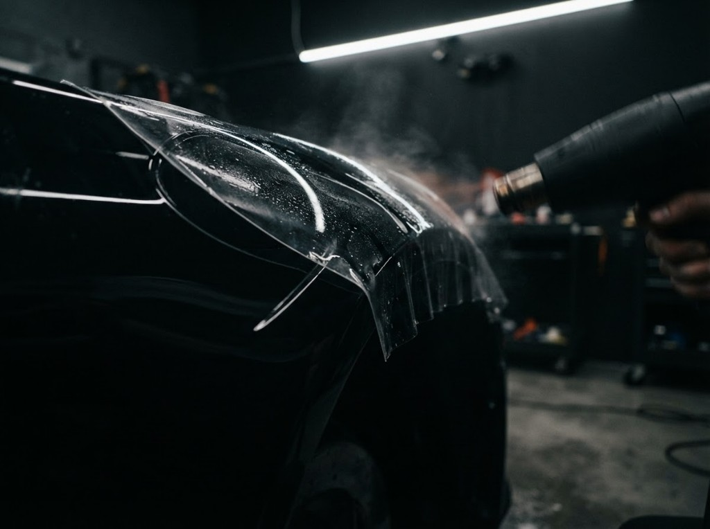

01
Детейлинг
Мойка, полировка и комплексный уход за кузовом и салоном.
Детейлинг, кузовной ремонт и покраска в Норильске. Восстанавливаем внешний вид автомобиля — от полировки до полного кузовного цикла.
От детейлинга до кузовного ремонта — подбираем решение под состояние автомобиля и ваши задачи.
Мойка, полировка и комплексный уход за кузовом и салоном.

Рихтовка, восстановление геометрии и подготовка к покраске.

Локальная и полная покраска с подбором цвета.
Блеск кузова, ровный цвет и чистый салон — работаем так, чтобы результат говорил сам за себя.
Оцениваем состояние автомобиля и составляем план работ.
Очищаем и готовим поверхности к основной процедуре.
Выполняем детейлинг, кузовные или малярные работы.
Проверяем результат и выдаём автомобиль клиенту.
Приезжайте по предварительной записи. Адрес и маршрут — в 2ГИС.
Carstyle
г. Норильск, ст. Голиково, 3
Ежедневно · 10:00–20:00 · по записи